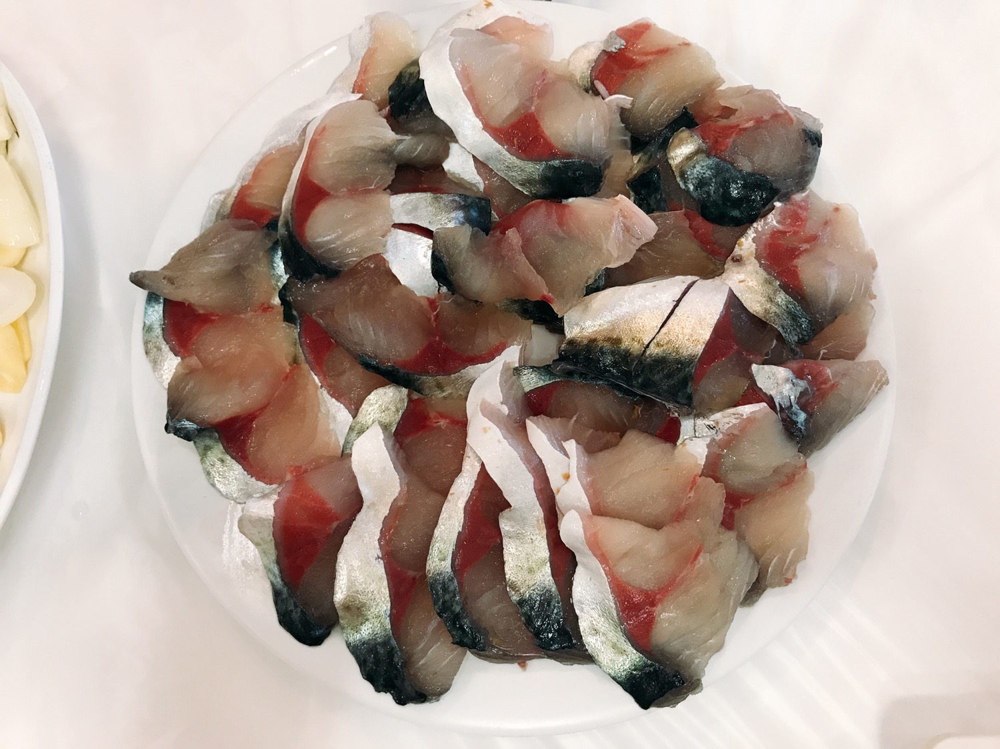
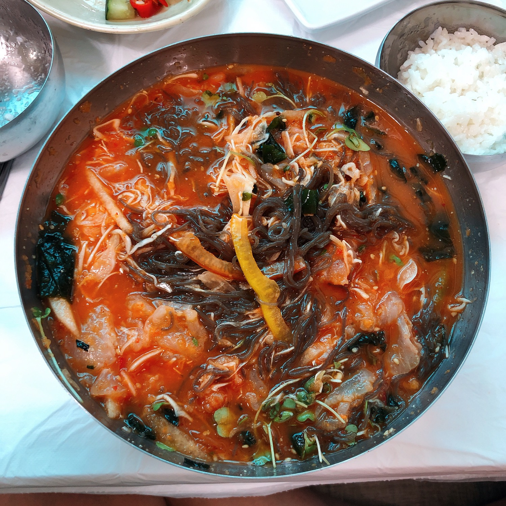

*뒤로가기*
여수
구경거리
먹거리
1. 고등어회

고등어는 생선 구이로 많이 먹어봤지 고등어회가 있다는 것을 처음으로 알았다.
고등어회를 처음 먹어봤는데 엄청 비릴꺼 같았지만 의외로 비리지 않고 쫄깃쫄깃하면서 너무 맛있었다.
비린거 잘 먹지 못 하는 사람에겐 쌈싸먹는 거 추천!!
2. 물회

역시 바다에 가면 꼭 먹어줘야 하는 물회!
새콤달콤 양념장에 신선한 회와 야채들이 정말 잘 어우러져 맛있었다.
그냥 회는 비려서 못 먹는 사람들은 물회 추천!!
*뒤로가기*